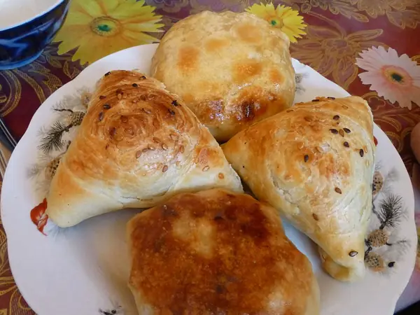

Фото: Ji-Elle, CC BY-SA 4.0

Самса из слоёного теста
Треугольные слоёные пирожки с рубленой бараниной, луком и зирой
60 мин6 порц.478 ккал на порциюБ 17 · Ж 30 · У 36Среднеазиатская кухня
Продукты на 6 порц.
- Слоёное тесто500 г
- Баранина400 г
- Лук репчатый3 шт
- Зира0,5 ч. л.
- Перец чёрный молотый0,5 ч. л.
- Соль1 ч. л.
- Вода1 ст. л.
- Яйцо куриное1 желток
- Кунжут1 ст. л.
Как готовить
- Разморозьте тесто при комнатной температуре 30 минут.
- Баранину нарежьте ножом мелким кубиком 5 мм, лук мелко порубите. Смешайте с зирой, солью, перцем и ложкой холодной воды.
- Раскатайте тесто до 2 мм и нарежьте квадратами 12×12 см, должно выйти 12 штук.
- Положите на каждый квадрат 1,5 ст. л. начинки, сложите углы к центру треугольником и плотно защипните швы.
- Выложите самсу швом вниз на противень с бумагой, смажьте желтком и посыпьте кунжутом.
- Выпекайте при 200 °C (сильный жар) 15 минут, затем убавьте до 180 °C (средний жар) и выпекайте ещё 15 минут, до золотистого цвета.
Совет. Не берите фарш из мясорубки: начинка из рубленого мяса остаётся сочной, а фарш сбивается в комок. Самса хорошо едет с собой, холодной тоже вкусная.